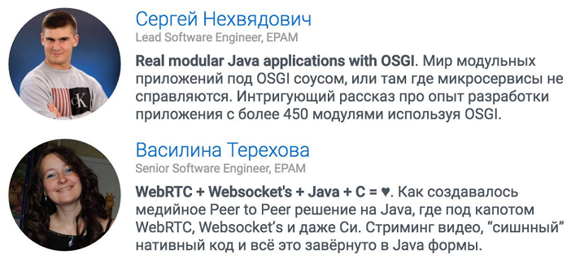

.
.
Друзья, привет.
С радостью спешу поделиться с вами нестандартным предложением того, как можно проводить весну-2016. Действительно, что можно делать в последний день весны? Можно фейсбучить в фейсбуке романтическими фразами, можно инстаграммить в инстарамме отцветающими ландышами, можно букать на букинге отель для предстоящего отпуска...
А можно отложить все эти дела на время, одеть очки и гиковскую майку с надписью типа —
Сдохни, но зарелизь!
и пойти брутально встречать брутальное лето!
Потому что
31 мая в 19-00 в клубе Imaguru состоится Java Meetup
на котором будут представлены два доклада по сверх-обалденным темам.
Доклады для нас прочтут ребята из компании Epam — Сергей Нехвядович и Василина Терехова. Вот так выглядит анонс мероприятия на странице группы Java Professionals BY в Facebook:
Сергей собирается рассказать нам о модульных приложениях с использованием OSGI и обещает представить проект, в котором 450 модулей. 450, ребята! В рамках нашего курса (в середине примерно), мы пытаемся с вами разбить один примерчик на модули, и у нас их получается аж 10 штук! Многие из вас в этот момент говорят:
Ну нет — это уже перебор! Пора переходить на PHP...
Я сейчас ради интереса решил посмотреть, сколько модулей в приложении, над которым тружусь - нашел 290 файлов сборки. Пусть и условно, но можно сказать, что у меня в проекте 290 модулей. Но я абсолютно точно могу заявить, что из своего проекта я знаю всего-то процентов 10! А тут представьте картину:
450 модулей, и чувак шарит в них на столько, что может рассказать нам!
Вы все еще спрашиваете у меня на занятиях, как оно выглядит - настоящее Java приложение?
Да после такого анонса я могу отвечать только словами всем известного security:
У Василины так вообще, по моим скромным предположениям, весенне-романтический доклад.
Вдумайтесь только, где-то далеко-далеко, в разных вселенных, одиноко бьются пылкие сердца языков Java и C.
И нет никакой надежды на их воссоединение, ибо препятствием тому стоит сама судьба, разведшая,
казалось бы, такие одинаковые операторы IF по разным платформам.
О-о-о, последователи Шекспира уже похватались за перья и занесли их над своими чернильницами, ожидая только одного — трагической развязки!
Но вот черта-с два им во все их гуманитарные душонки!
Ибо на сцене появляется Василина с протоколом WebRTC в одной руке и WebSocket-ами в другой,
и в стиле Маяковского заявляет решительно-гордо:
Погоди откупоривать банки с ядом,
Все это исправить - раз плюнуть!
Ведь С-шного кода, нативного, много
В Jav-у
можно
засунуть!
Ну, в общем, не стоит, мне, наверное, больше пытаться раскрыть вам суть предстоящих докладов. Лучше я ограничусь информацией о:
Времени встречи: 31-ого мая в 19-00.
И
Месте встречи: Клуб Imaguru, г. Минск, ул. Фабрициуса, 4.
А еще, друзья, я уверен, что вам обязательно нужно подружиться с группой Java Professionals BY на Facebook,
тогда Вы сможете получать уведомления обо всех предстоящих Java-мероприятиях заблаговременно и без псевдо-Маяковского
.
Благодарю вас за внимание и до встречи на meetup-e!